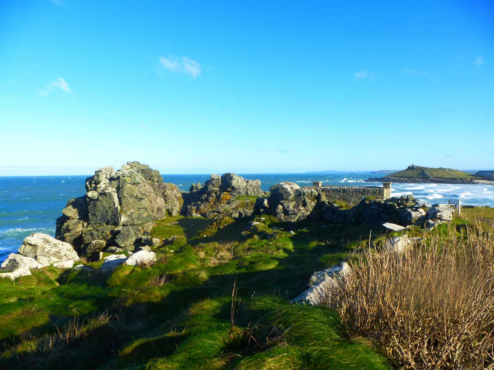
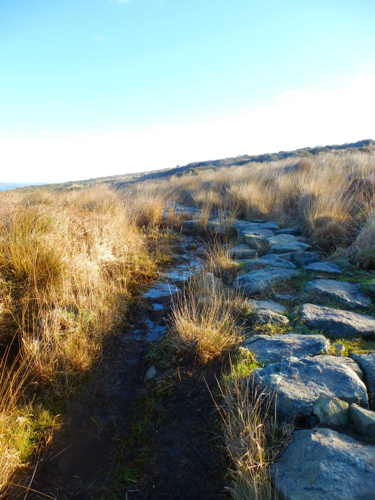

Start Ref: 5165 4075
End Ref: 5165 4075
Distance: 5 miles
Time: 2.5hrs
We started in the car park beside the cemetery that holds Commonwealth Graves just above both Porthmeor Beach and Tate St. Ives. From here, we walked down the steps towards the beach and once reaching the road at the bottom, turned left and headed towards the short stay car park. The coastal path is well signposted here and you follow on pass the Bowling Green. However, at the short stay car park, look across the road as this is the site of St. Ia`s Holy Well. The tarmac footpath leads you to the western end of Porthmeor Beach and out to Carrick Du, where the tarmac runs out and the footpath becomes more traditionally coastal. We continue heading in a westerly direction and then North Westerly direction until we come to the lovely named Clodgy Point and spectacular views back over St. Ives and The Island.
Continue along the path, ensuring that when the path branches, we keep to the right hand path (as we will return on the left hand one) and now we are heading towards Hor Point. On this section of the path spare a thought for those poor souls who laid the granite blocks that you are now walking on. Follow this path now as it reverts back to traditional and starts to descend and ascend – in some places quite steep and in two places very close to the edge. Not nice if you are anxious about heights.
As you ascend one section, as you are truly leaving Hor Point, and you have reached its top, the path splits. One path goes right (which we are going take) the other turns left. The left branch is the one we are going to take on the return leg. Turning right, though, we are now heading towards Pen Enys Point, and as we reach it, there is a small path which heads north, and away from the official footpath, towards the point itself. This is OK to follow this as we are on Open Access Land, and again at the point there is the option of some spectacular photographs. Once we have visited the point, follow the path on and around until we come to a swinging kissing gate.
The footpath we are going to take is now heading back on ourselves to the left keeping the fence on our right – do NOT go through the gate for the walk, however, about 20 meters through it there is a picnic bench if you want.
When restarting our walk we are now following the path and cutting off going back around Pen Enys Point, as it leads us back towards the coastal path and the spot where the path splits just prior to us returning to Hor Point. We are now going to follow this wider path as it cuts a straighter route back, until it again splits with a small granite signpost pointing to either the coastal path or Hellesveor. Here, we need to ensure that we turn left and head back to the coast otherwise we are heading too far inland. This path now heads us back to Clodgy Point – take care to follow the main path and not some of the smaller tracks which appear to lead you over the rocky hill as these lead into dense bracken and stunted compacted trees. Trust me!!
The path back from Clodgy Point to Carrick Du is a reverse of our outward journey, and now we can start to look forward to a pint in one of St. Ives pubs as Porthmeor is once again in sight, and the footpath once again becomes tarmac.
If you have time, can I suggest walking out and around The Island or even up it. Again, it is well worth the time.
I hope that you enjoy this walk.